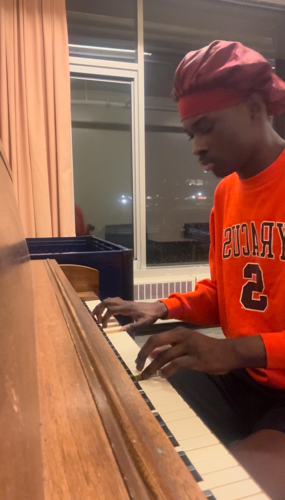
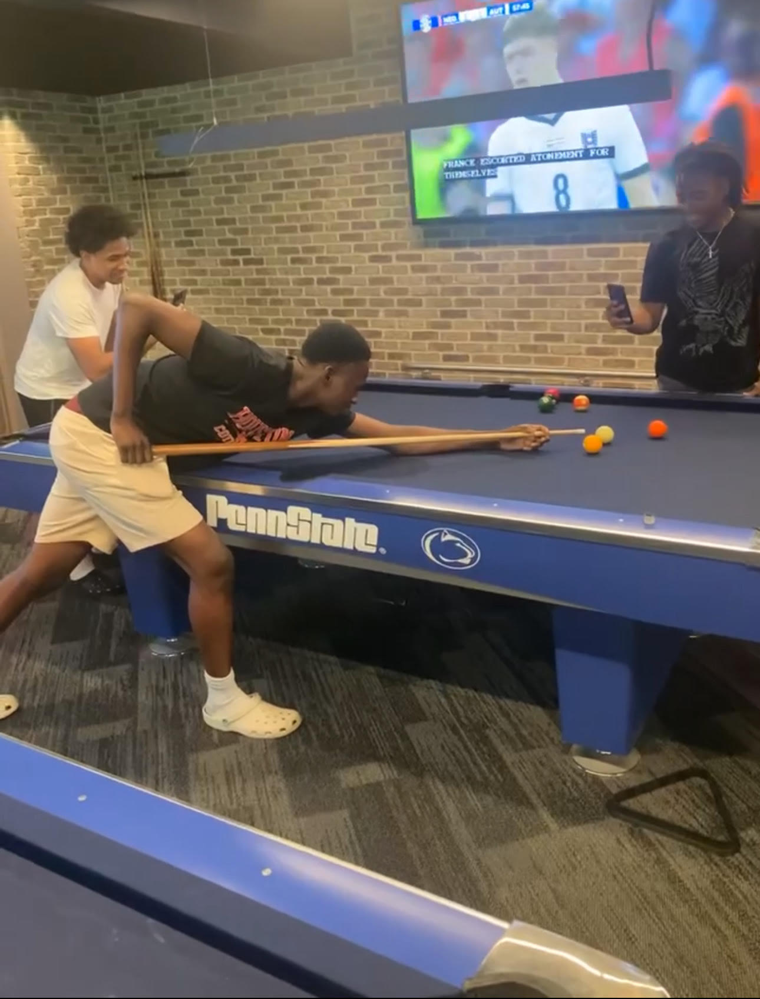
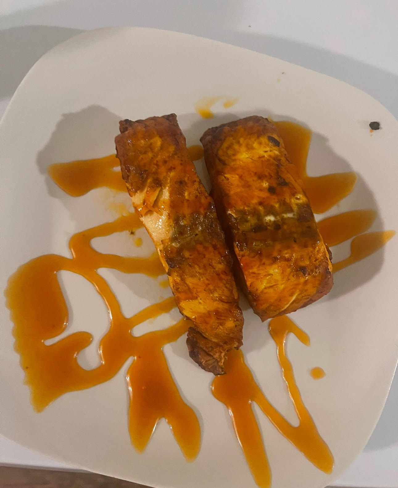
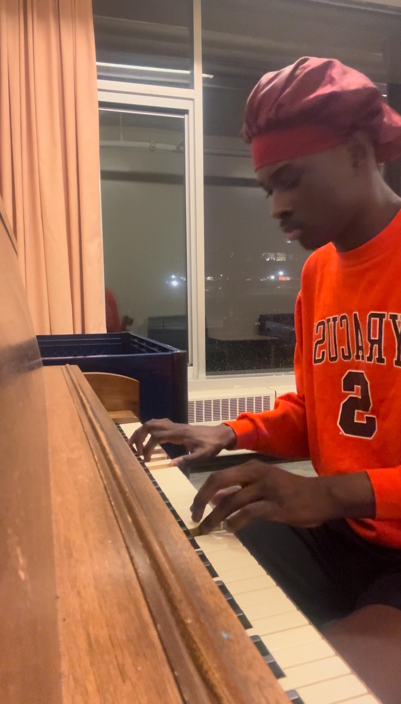
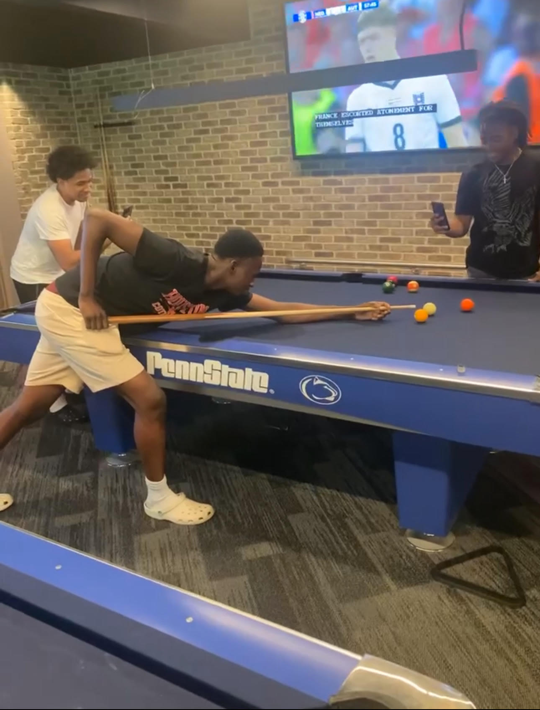
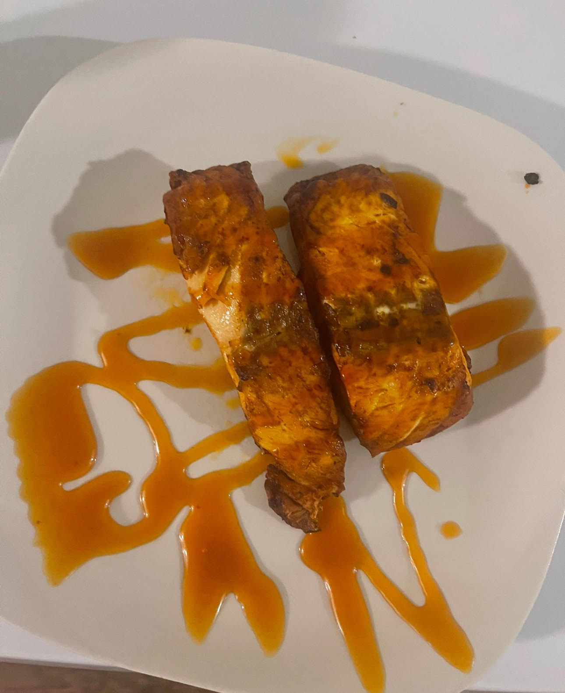

Music has been a significant part of my life. I’ve been playing the clarinet for six years, starting in high school and continuing through college. I’ve played at church services and weddings. Playing the clarinet allows me to express myself and bring joy to others. It’s more than just an instrument to me—it’s a way to connect with people and create beautiful moments.
I also love to play the piano. I played for my church throughout the three years of high school, and it was one of my most cherished experiences. The piano has always been my favorite instrument for relaxation and expressing creativity. Whether I'm improvising or learning new songs, it's a hobby that soothes and brings me joy.
When I’m not playing music, I love diving into video games. My favorite games are Fortnite, Roblox, and Rocket League. Gaming, to me, is about working with friends, strategizing, and having fun. Weekends are always the best time for me to unwind and enjoy friendly competition in these exciting virtual worlds.
Cooking has also been one of my favorite activities. I love preparing different types of food, especially traditional Nigerian dishes like Jollof rice and fufu. These recipes remind me of home and allow me to share my culture with others. I also enjoy cooking American meals, such as salmon with rice and fried potatoes. Cooking is not just a skill—it’s a creative outlet that brings joy to myself and those around me.